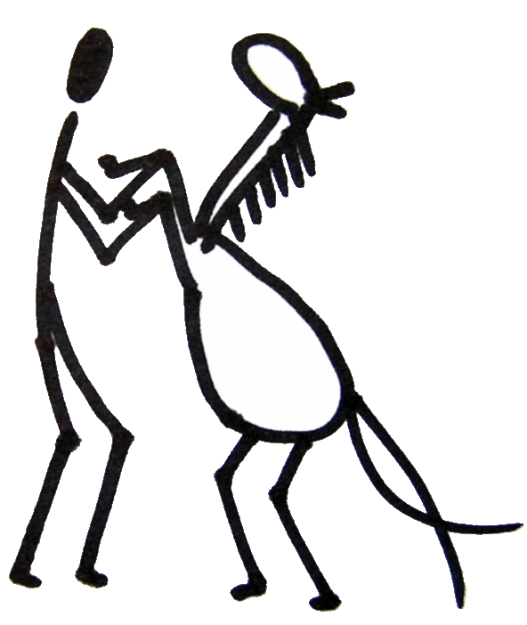
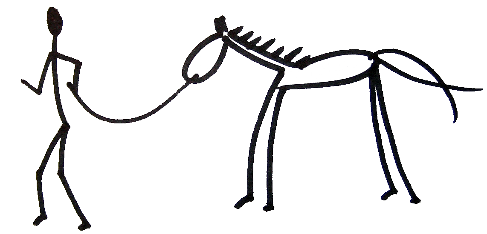

Spirit Horse je...
- o lidech a vztazích, o umìní øídit svùj ¾ivot, o (nejen) lidské pøirozenosti
- experimentální akce (ale víme co dìláme :-)
- kus léta strávený v krásném iluzorním svìtì

- ochutnávka sou¾ití s koòmi, lidmi a pøírodou
- pohoda romantických veèerù v tee-pee
- dobrodru¾ství v pùvodním slova smyslu: dobro-druh
- mo¾nost zakusit ¾ití okam¾ikem
- ¹ance podívat se na svùj svìt z jiné perspektivy
- výsledek pùlroèní pøípravy nìkolika nad¹encù
Na druhou stranu, Spirit Horse opravdu není...
- týden strávený v koòském sedle
- klasická prázdninovka IS Brno
- semináø pøirozené komunikace
- tábor pro dospìlé s jezdeckým programem
- nekoneèné krou¾ení s konìm po jízdárnì
- zájezd s cestovní kanceláøí
- rodinná dovolená na farmì
- individuální nebo skupinová psychoterapie
- soustøedìní pro vrcholové sportovce
- akce výhradnì pro kované koòáky